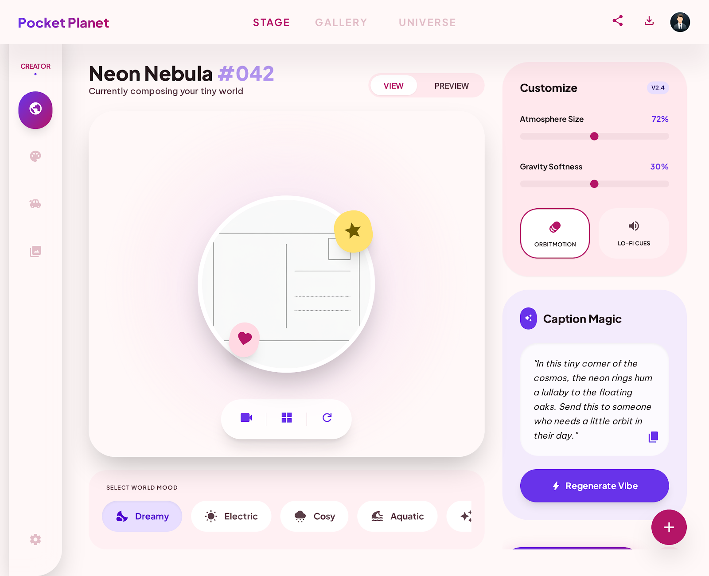

PF SAFE DEMO · 2026-04-10-p004
Pocket Planet Postcard Composer
A playful mini studio that lets users generate tiny animated planet postcards with mood, weather, soundtrack cues, and share-ready captions.
ingest status
Imported from Stitch exportThe approved Stitch screen now ships through a local PF-safe wrapper for stable preview, build, and hosting.
- Source preserved as local artifact
- Public demo path avoids remote CDN dependency
- Preview uses the shipped Stitch screen
